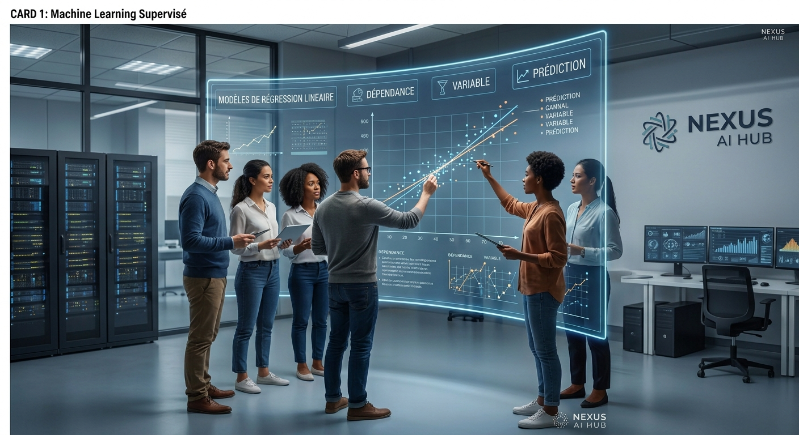
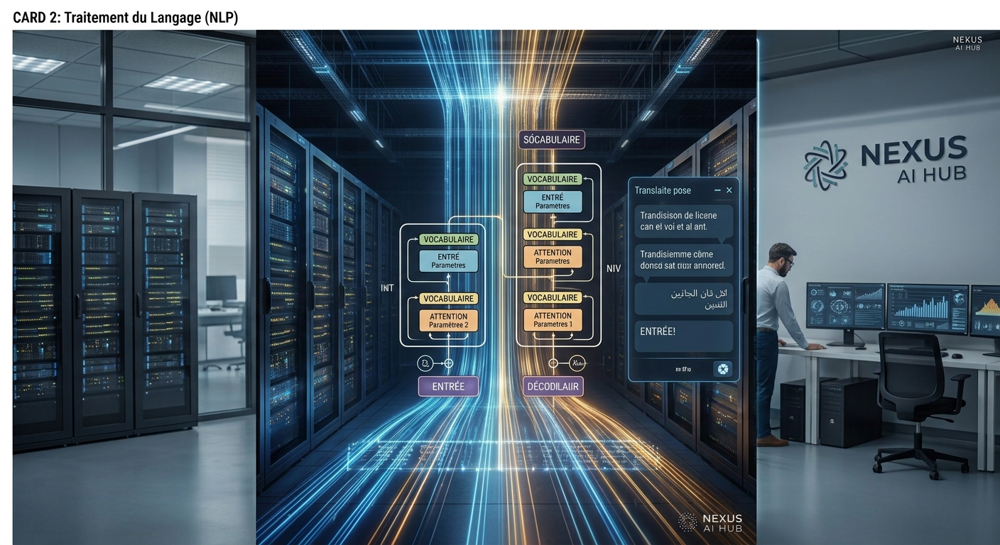
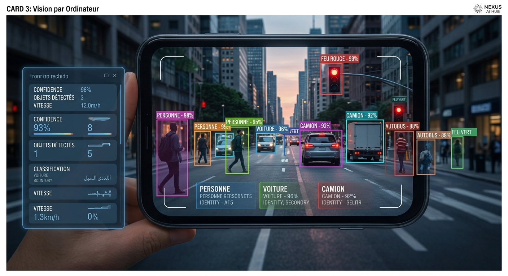
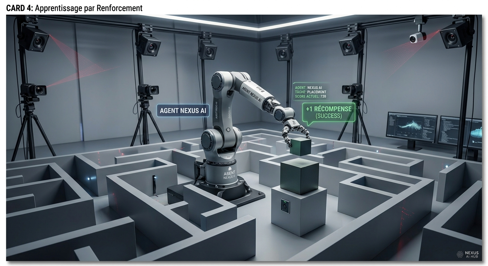
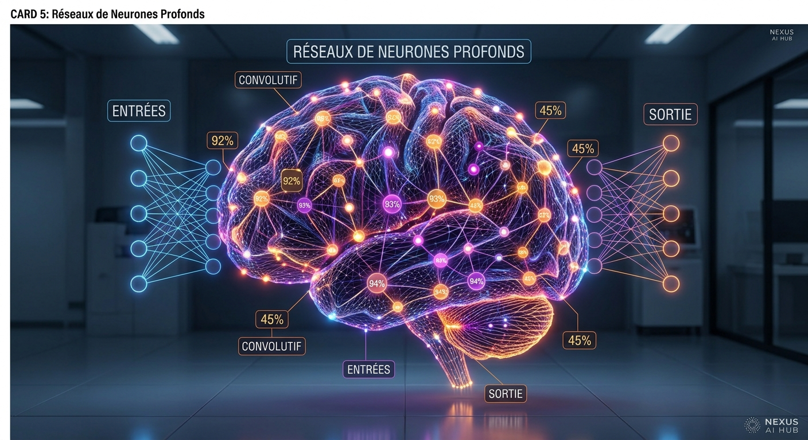
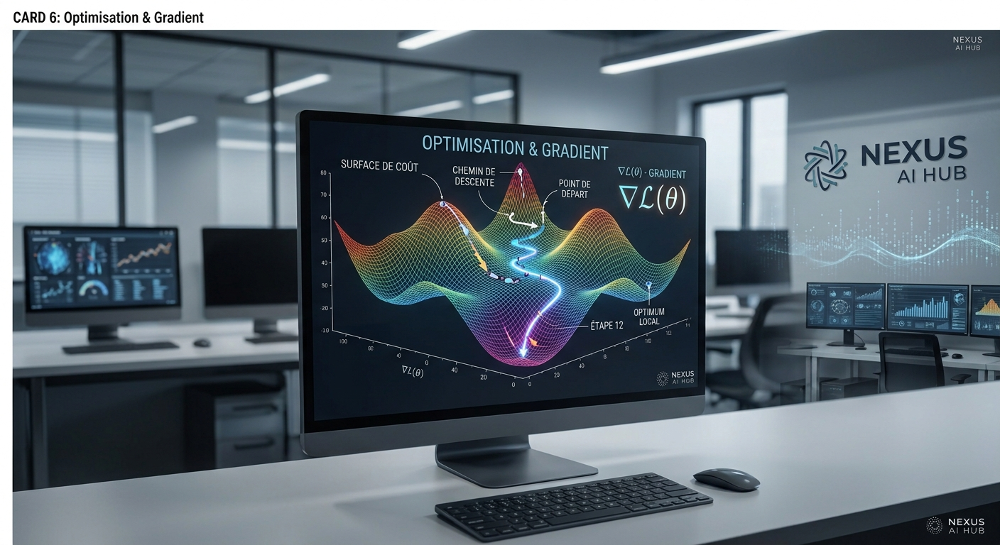
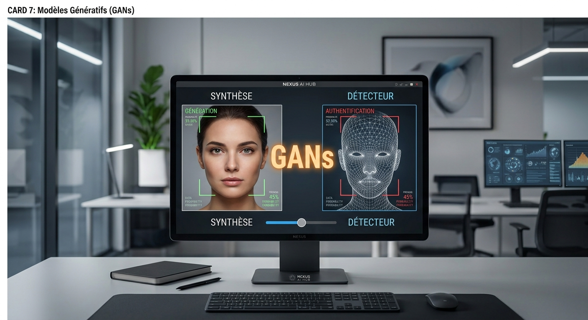

Infrastructures & MLOps
Passez du prototype au déploiement en production. Industrialisez vos pipelines de données, gérez le versionnage des modèles et assurez leur scalabilité dans le cloud.
Découvrir le MLOpsExplorez les frontières de l'Intelligence Artificielle, du Machine Learning et des réseaux de neurones profonds.
Explorer les algorithmes
Apprenez à entraîner des modèles prédictifs à l'aide de données étiquetées pour la classification et la régression.
En savoir plus
Plongez au cœur de la compréhension du langage naturel, des transformeurs et des grands modèles de langue (LLM).
En savoir plus
Analysez, segmentez et interprétez des flux vidéo et des images grâce aux réseaux de neurones convolutifs (CNN).
En savoir plus
Concevez des agents autonomes capables d'apprendre par essais-erreurs dans des environnements complexes.
En savoir plusPassez du prototype au déploiement en production. Industrialisez vos pipelines de données, gérez le versionnage des modèles et assurez leur scalabilité dans le cloud.
Découvrir le MLOps
Simulez le fonctionnement du cerveau humain à travers des architectures multicouches pour résoudre des tâches complexes.
En savoir plus
Maîtrisez les algorithmes de descente de gradient stochastique pour minimiser la fonction de perte de vos modèles.
En savoir plus
Découvrez comment les réseaux antagonistes génératifs créent des contenus synthétiques d'un réalisme saisissant.
En savoir plusAnalysez les biais algorithmiques, la transparence des décisions et la sécurité des données dans les systèmes d'IA.
En savoir plusUne plateforme dédiée à la recherche, au partage de connaissances et à la mise en œuvre pratique des technologies d'intelligence artificielle modernes.
Rejoindre le hubSuivez-nous :